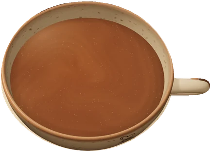
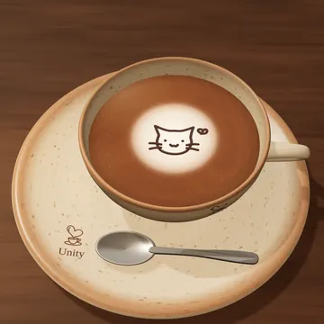

Unityチョコペン・ラテアート
カップを準備中…
ピッチャーを液面へドラッグ。または液面を長押し。
今のミルクとチョコを消し、コーヒーから始めます。
「ミルクの勢い」を左に寄せ、狙った液面を長押しして細く注ぎます。白い模様を出したいところで指を離し、勢いを少し上げてから、もう一度長押しします。ピッチャーの高さと傾きは、勢いに合わせて自動で変わります。
カップに抽出し、小さく回して表面のクレマ（茶色い泡）の濃淡をそろえます。ここが模様の背景になります。
冷たいミルクの表面近くで少し空気を含ませ、ノズルを少し沈めて渦を作ります。大きな泡があればピッチャーの底を軽く台に当て、くるくる回します。全体につやが出て、傾けると泡とミルクが一緒に流れる状態が目安です。
カップを注ぎ口側に傾け、高めから中央へ細く注ぎます。ミルクがなじみ、下地が均一な茶色になったら、注ぎ口を液面すれすれまで下げます。ピッチャーを少し傾けて流量を増やすと、白い泡が広がります。注ぐ量に合わせてカップを水平に戻します。
注ぐハート 中央に白い丸を広げ、注ぎ口を少し上げて流れを細くし、丸の中央を向こう側へ引き切ります。エッチング用なら、白い面を残して注ぎ終えます。
製品の表示に従ってペンを準備し、別のオーブンシートで試し描きします。一滴が丸く留まり、線が途切れずに出る粘度が目安。固ければ表示に沿って柔らかくし、流れすぎるときは少量で再度試します。
竹串などのピックは先だけを表面に当て、一筆ごとに先を拭きます。
線が広がるときはチョコの量を減らし、シートで次の一滴を確認します。泡が粗いと線が割れやすく、同じ場所を何度もなぞると茶色が広がります。小さなはみ出しは、拭いたピックで輪郭の内側へ一度だけ寄せます。
泡をタップすると一滴。ひげは「太さ」を細めにして、指をすべらせます。「戻す」で直前の一筆を取り消せます。
